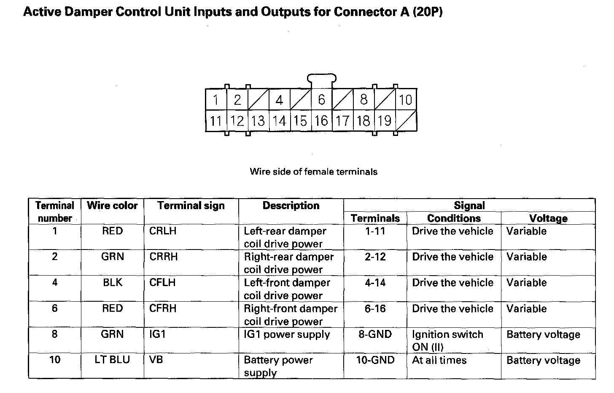
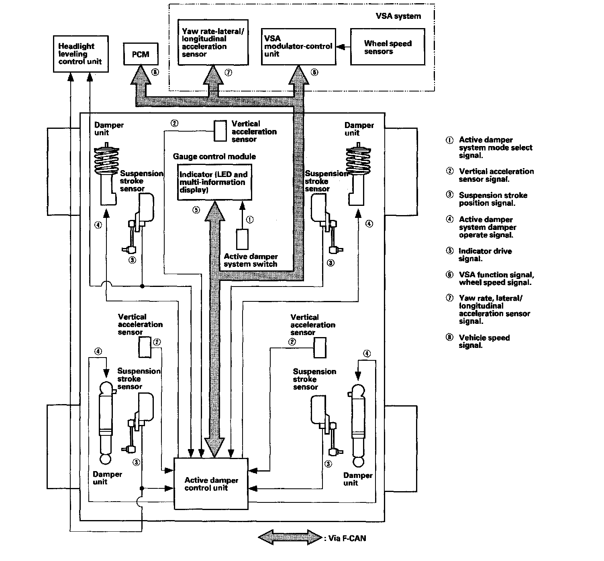
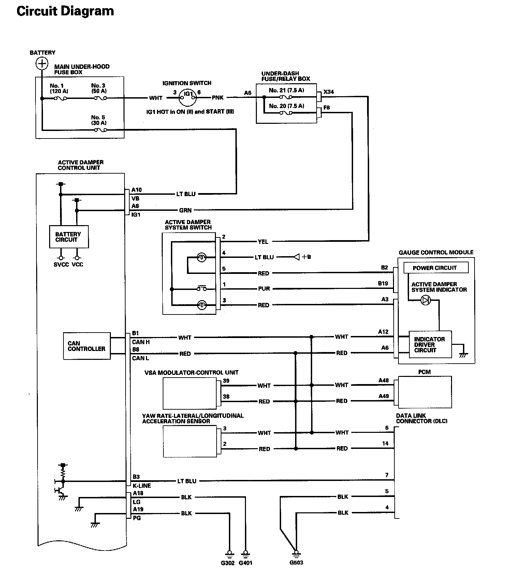
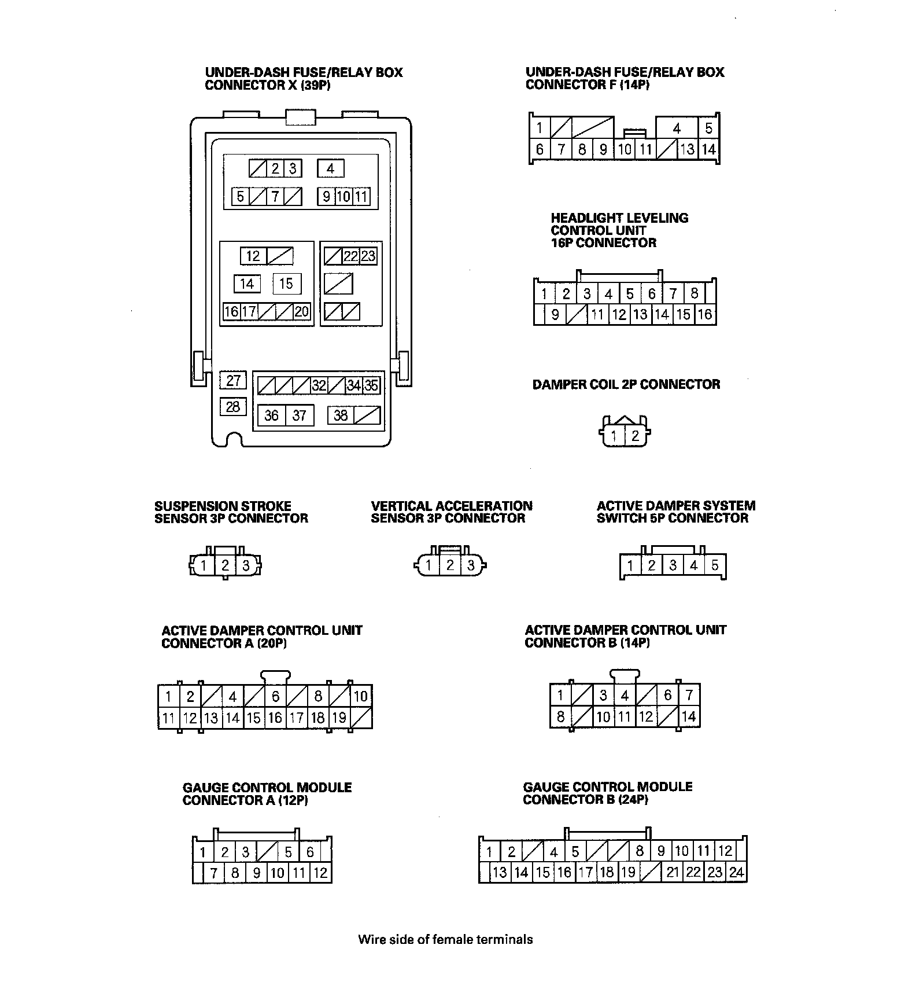
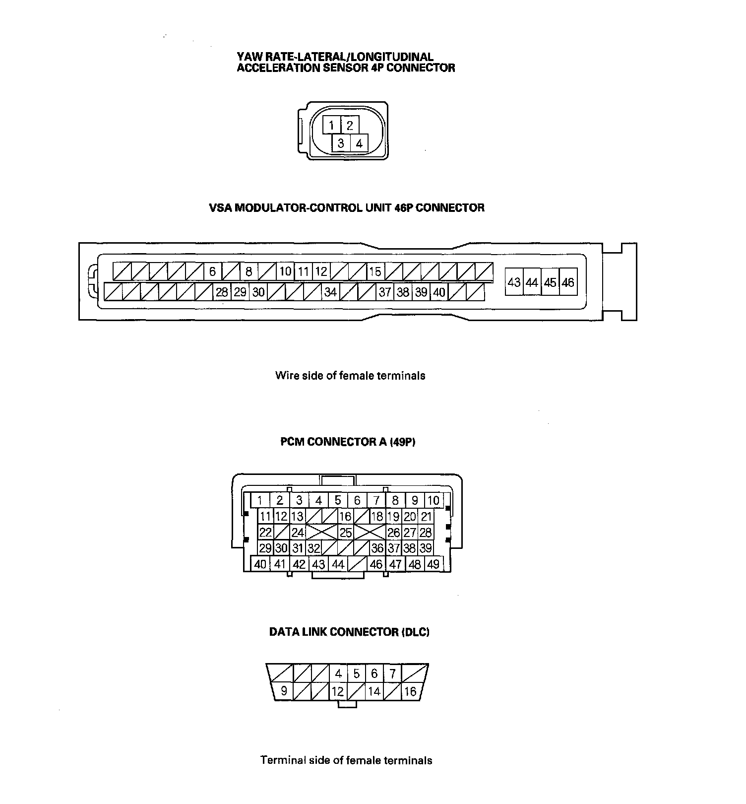

Suspension Control ( Automatic - Electronic ): Description and Operation
System DescriptionActive Damper Control Unit Inputs and Outputs for Connector A (20P) (Part 1):

Active Damper Control Unit Inputs and Outputs for Connector A (20P) (Part 2):
Active Damper Control Unit Inputs and Outputs for Connector B (14P):
Active Damper System Controls
The active damper control unit continuously monitors inputs from various sensors and the mode select switch. The control unit will adjust each damper's force by controlling current to them.
The active damper system requires a special damper that is capable of quick response and action. This allows them to respond quickly for changes in conditions.
System Communication
The active damper system has an active damper control unit, four quick-reacting damper units with internal damper coil, three vertical acceleration sensors, four suspension stroke sensors, a mode select switch, and an active damper system indicator. In addition, the active damper system receives signals from the VSA system, the PCM, and relates information with the headlight leveling control system.
The active damper control unit performs an arithmetical operation from various vehicle conditions pitching, roll, bump, vehicle speed, and driver's mode selection, then selects the most suitable damping characteristics or setting.

MRF (Magneto Rheological Fluid) in the Damper Unit
Variable suspension damping force is achieved by controlling the intensity of magnetic flux in the damper piston. The orientation of iron particles suspended in the damper oil is changed as the fluid flows through the magnetic field, thereby changing the effective viscosity of the fluid. The amount of change in the fluid's behavior is proportional to the amount of electrical current supplied to the windings in the piston.
Circuit Diagram
Active Damper System Circuit Diagram (Part 1):

Active Damper System Circuit Diagram (Part 2):

Active Damper System Circuit Diagram (Part 3):

Active Damper System Circuit Diagram (Part 4):

Active Damper System Circuit Diagram (Part 5):
